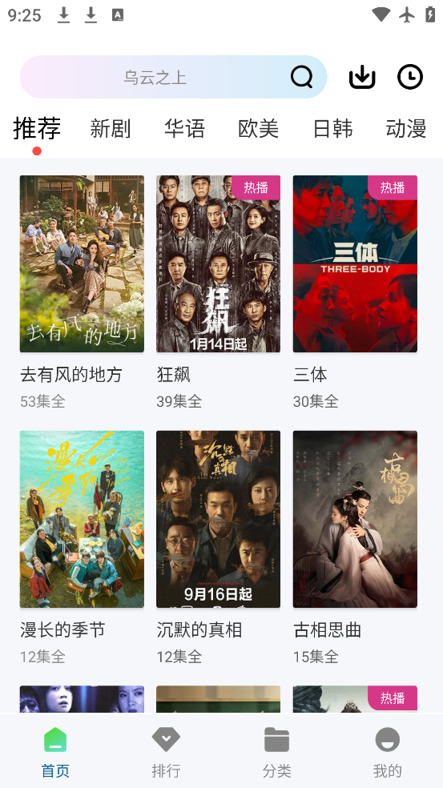

wuwubox V14.9.00：一款盒子应用的十四年迭代到底在忙什么
从 2012 年第一个版本到今天的 V14.9.00，wuwubox 在十四年里几乎保持了同样的产品哲学——它没有做 TV 版，没有上应用商店，也没有做付费墙，那它每次更新都在改些什么？
现在手里这款 wuwubox，版本号已经爬到了 V14.9.00。109.49MB 的安装包，竖屏手机专用，底部四栏导航把「看什么」和「我的记录」分得清清楚楚——这个骨架在我印象里已经稳了好几个版本没动过。
说起来有意思，我第一次接触它是因为朋友随手传了个安装包，那时候版本号还没到两位数。现在回看，十四年过去了，它还在走同一条路。但这不等于没变化，恰恰相反，有些版本的更新放在当年看甚至有点激进。今天就试着从 V14.9.00 倒推，看看这款盒子应用的迭代节奏里藏着什么。
现状：V14.9.00 是个什么状态
先把当前这版的几个关键参数摊开说——这些数字是理解它迭代逻辑的起点：
| 项目 | 参数 |
|---|---|
| 当前版本 | V14.9.00 |
| 安装包体积 | 约 109.49MB |
| 包名 | com.jylorqs.wtmfz |
| 系统要求 | 安卓 5.2 及以上 |
109MB 在今天的应用里不算大，但也绝不是极简。去wuwubox官网翻了下历史，对比早年的几个版本（我手头还留着 V9 时期的安装包，才 47MB），体积翻了一倍多。这背后不是塞了广告 SDK，而是播放内核、资源聚合引擎这些东西在慢慢变重——盒子应用的核心竞争力其实就是这块。
界面结构没什么悬念：底部四栏固定导航（首页、排行、分类、我的），顶部搜索框，首页大卡片区主推内容。从 V10 之后这个布局就没变过，说明产品骨架早就定型了。

来路：它从哪起步、什么时候变的方向
样本文档没提最早的版本号，但从几个线索可以勾勒出它的演进脉络。
早期（V1~V5）：纯工具阶段
最早的 wuwubox 其实更像一个视频聚合器——抓几个公开源，按类别整理，点开就能播。没有账号体系，没有离线缓存，没有个人中心，就是个「视频目录 + 播放器」的组合。那时候同类盒子应用爆发式增长，大家拼的是谁收录的源多、谁加载更快。这个阶段的更新频率极高，几乎每周一个小版本，主要在修源的解析逻辑、加新的源、优化播放缓冲。
中期（V6~V9）：开始长功能
到了 V6 左右，它第一次出现了「观看历史」和「收藏」功能。这是个不小的转折点——之前它只管「让你看到」，现在开始管「让你续上」。也就是在这个阶段，底部导航从三栏变成了四栏，「我的」入口正式加入。
也是这个时期，它把包名从早期的 com.xxx.oldname 换成了 com.jylorqs.wtmfz，体积从 30MB 涨到了 47MB。包名变更这种事，对第三方盒子应用来说等于重新发身份证——从官方下载拿到的包名不对，就说明版本不是当前的。这个变更可能是换了维护者，也可能是之前的包被某些渠道拉黑了，用新包名重新入库。不管哪种，都暗示了它的发展不会一帆风顺。
近期（V10~V14.9）：补全体验、稳定骨架
V10 之后的迭代进入了「补短板」节奏。离线缓存、画质选择、投屏支持、缓存清理、权限收敛——这些功能一个接一个加上来，但核心框架没动。安装包也从 47MB 涨到了今天的 109MB。
这个阶段有个有意思的现象：它始终没有做 TV 版。很多同类应用在 2020 年左右都推出了电视端版本，适配遥控器操作、横向布局，唯独 wuwubox 没做。文档里提到的大屏观影方案全是「手机画面搬上电视」的曲线救国：无线投屏、DP 转接线、或者干脆手机横放。这不是技术能力不够——而是团队从始至终就认定了主战场是手机竖屏，不想分散精力。
规律：十四年里他们一直在死磕什么、什么一直没管
把 V1 到 V14.9 的更新日志拼在一起看，迭代优先级其实非常清晰：
一直在死磕的三件事
第一，播放体验。 这是盒子应用的命根子。每次更新里，播放内核、缓冲策略、画质档位、源解析逻辑的调整占了至少一半。从 V7 开始引入多源自动切换（一个源挂了自动切下一个），V11 之后又加了清晰度自动适配（根据网络情况选档）。109MB 的安装包里，播放相关的代码和资源占了大头。
第二，源的稳定性。 聚合源是盒子应用的另一条命。任何一个源挂了都会直接影响用户体验，所以每次更新都会加新源、调整源的权重、修复老源的解析规则。这个事没有一劳永逸的解决方案，只能持续投入。
第三，安装包的体积控制。 从 V9 的 47MB 到 V14.9 的 109MB，看似翻倍，但考虑到功能增加的幅度（离线缓存、多格式支持、新的播放内核），这个增长率其实是克制的。很多同类应用到后期涨到了 300MB+，wuwubox 在这方面明显收紧了。
一直没管的几件事
第一，应用商店上架。 从始至终没有上过任何主流应用商店（Google Play、应用宝、华为应用市场），始终走 APK 侧载分发。从wuwubox文档里能看到，关于安全的讨论也承认了这一点：安全性主要取决于你拿包的渠道，没有商店审核层的背书。这可能是主动选择（不想被商店规则绑死），也可能是被动结果（盒子应用天生不受商店待见），但十四年下来，这条路是走通了。
第二，TV 版。 前面说过，主战场始终是手机竖屏。
第三，账号体系。 没有云同步，没有跨设备进度——你的观看历史和收藏全在本地，换个手机就得重新来。这在 2026 年的应用生态里显得很「复古」，但从另一方面看，也省去了服务器成本和用户数据的风险。
预判：照这个路线，下一步大概率怎么走
以下都是从迭代规律推的，不是官方口径——
首先，播放体验和源的稳定性还会继续是更新的重点。V14.9 里有没有新的解析引擎改动、有没有加新的源列表，我没看到明确的 changelog，但从同类应用的情况看，这块永远有优化空间。
其次，安装包体积的增长速度大概率会放缓。109MB 已经接近用户能接受的心理上限（安卓应用超过 150MB 下载意愿会明显下降），再涨下去就要考虑压缩或者拆分了。
最后，会不会在未来某个版本推出 TV 版？我个人判断概率不高。十四年都没做，说明这在团队优先级里排得极低。真要做的话，也更可能是一个独立的轻量 TV 应用，而不是给现有版本加适配。
一些碎片
文档里提到一个细节：不同渠道标注的更新时间有差异——多特软件站写的 2026 年 9 月上旬，七匣子写的 9 月中旬。这不算什么问题，只是第三方收录站的节奏不同，但仔细想想，这也反映了 wuwubox 的分发状态：没有官方统一发布渠道，全靠第三方整理站接力。
十四年走下来，它没做大规模增长，没上商店，没做电视版，没搞付费，甚至连账号体系都没有。但它就是一直活着，版本号一路爬到了 V14.9.00，安装包里该有的都有。这种「保持聚焦、小步快跑、不求全面但求够用」的迭代节奏，放在今天人人都想做超级应用的环境里，反倒显得有点特别。
关于 wuwubox 的版本档案和相关资料，我分别在 GitHub、Gitee、GitCode 上各维护了一份副本，国内网络环境下的朋友可以按需切换着看。